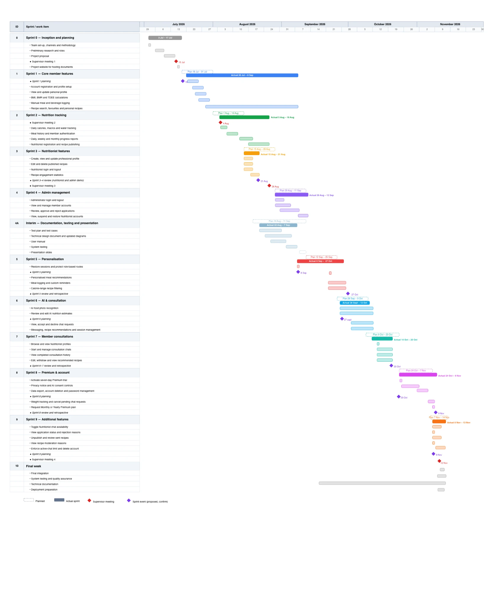

Project record
Project Timeline
Our sprints from July to November 2026: when each one was planned, when it actually ran, and what it delivered.


3 – 17 Jul 2026
Sprint 0: Inception & Planning
- Team set-up, channels and methodology
- Preliminary research and roles
- Project proposal
- Supervisor meeting 1 · 15 Jul
- Project website for hosting documents
20 Jul – 8 Sep 2026
Sprint 1: Core Member Features
- Planned 18 – 31 Jul
- Sprint 1 planning
- Account registration and profile setup
- View and update personal profile
- BMI, BMR and TDEE calculations
- Manual meal and beverage logging
- Recipe search, favourites and personal recipes
5 – 18 Aug 2026
Sprint 2: Nutrition Tracking
- Planned 1 – 14 Aug
- Supervisor meeting 2 · 4 Aug
- Daily calories, macros and water tracking
- Meal history and member authentication
- Daily, weekly and monthly progress reports
- Nutritionist registration and recipe publishing
15 – 21 Aug 2026
Sprint 3: Nutritionist Features
- Planned 15 – 28 Aug
- Create, view and update professional profile
- Edit and delete published recipes
- Nutritionist login and logout
- Recipe engagement statistics
- Sprint 3–4 review (nutritionist and admin demo) · 21 Aug
- Supervisor meeting 3 · 26 Aug
29 Aug – 12 Sep 2026
Sprint 4: Admin Management
- Planned 29 Aug – 11 Sep
- Administrator login and logout
- View and manage member accounts
- Review, approve and reject applications
- View, suspend and restore nutritionist accounts
22 Aug – 7 Sep 2026
Interim: Documentation, Testing & Presentation
- Planned 19 Aug – 11 Sep
- Test plan and test cases
- Technical design document and updated diagrams
- User manual
- System testing
- Presentation slides
8 Sep – 27 Oct 2026
Sprint 5: Personalisation
- Planned 12 – 25 Sep
- Sprint 5 planning · 8 Sep
- Restore sessions and protect role-based routes
- Personalised meal recommendations
- Meal-logging and custom reminders
- Calorie-range recipe filtering
- Sprint 5 review and retrospective · 27 Oct
28 Sep – 12 Oct 2026
Sprint 6: AI & Consultation
- Planned 26 Sep – 9 Oct
- Sprint 6 planning · 27 Sep
- AI food photo recognition
- Review and edit AI nutrition estimates
- View, accept and decline chat requests
- Messaging, recipe recommendations and session management
14 – 20 Oct 2026
Sprint 7: Member Consultations
- Planned 9 – 23 Oct
- Browse and view nutritionist profiles
- Start and manage consultation chats
- View completed consultation history
- Edit, withdraw and view recommended recipes
- Sprint 6–7 review and retrospective · 20 Oct
24 Oct – 9 Nov 2026
Sprint 8: Premium & Account
- Planned 24 Oct – 7 Nov
- Sprint 8 planning · 23 Oct
- Activate seven-day Premium trial
- Privacy notice and AI consent controls
- Data export, account deletion and password management
- Weight tracking and cancel pending chat requests
- Request Monthly or Yearly Premium plan
- Sprint 8 review and retrospective · 9 Nov
8 – 13 Nov 2026
Sprint 9: Additional Features
- Planned 7 – 14 Nov
- Sprint 9 planning · 8 Nov
- Toggle nutritionist chat availability
- View application status and rejection reasons
- Unpublish and review sent recipes
- View recipe moderation reasons
- Enforce active-chat limit and delete account
- Supervisor meeting 4 · 12 Nov
Nov 2026
Sprint 10: Final Week
- Final integration
- System testing and quality assurance
- Technical documentation
- Deployment preparation